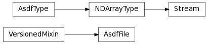

This is the documentation for pyasdf.
| open(init[, mode, uri]) | Open a AsdfFile. |
| test([package, test_path, args, plugins, ...]) | Run the tests using py.test. |
| AsdfFile([tree, uri]) | The main class that represents a ASDF file. |
| Stream(shape, dtype[, strides]) | Used to put a streamed array into the tree. |
